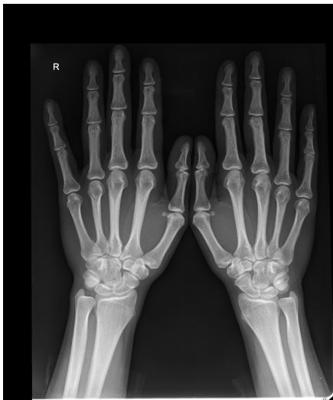
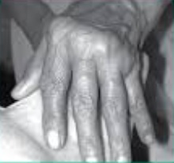
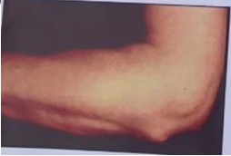

A artrite reumatoide é uma doença inflamatória autoimune, progressiva, que acomete primariamente a membrana sinovial das articulações. De acordo com as Recomendações da Sociedade Brasileira de Reumatologia, o primeiro esquema terapêutico a ser utilizado deve incluir um DMARD (droga modificadora do curso da doença)
Em relação à artrite reumatoide, é correto afirmar que
Sobre a artrite reumatoide (AR), analisar os itens abaixo: I. A incidência da AR aumenta entre os 25 e os 55 anos, atingindo, em seguida, um platô até os 75 anos, e, então, diminuindo. II. Uma vez estabelecido o processo patológico da AR, punhos, articulações metacarpofalângicas e, principalmente, interfalângicas distais destacam-se como as articulações mais frequentemente envolvidas. III. Ao contrário da espondiloartrite, a AR raramente afeta a coluna torácica e lombar. Está(ão) CORRETO(S):
Uma paciente se apresenta com dor em mãos, pés e punhos bilateralmente há dois meses, com rigidez matinal. Seu reumatologista solicita anti-CCP e fator reumatoide. Após os resultados ele inicia o tratamento com prednisona 5 mg. Acerca desse assunto, assinale a alternativa correta.
Mulher, 50 anos de idade, procura atendimento ambulatorial por dores em articulações das mãos. As dores foram iniciadas há 8 meses e são acompanhadas de rigidez matinal. De antecedentes refere hipotireoidismo, em uso de levotiroxina. Ao exame físico, sinais vitais e ausculta sem alterações. Notam-se edema e dor à movimentação passiva das articulações interfalangianas proximais em ambas as mãos, inclusive dos polegares, além de punhos. Realizado fator reumatoide, reagente. Frente ao caso, Segundo o protocolo do Sistema Único de Saúde, SUS, a medicação de primeira linha, a ser oferecida, é:
Mulher, 50 anos de idade, procura atendimento ambulatorial por dores em articulações das mãos. As dores foram iniciadas há 8 meses e são acompanhadas de rigidez matinal. De antecedentes refere hipotireoidismo, em uso de levotiroxina. Ao exame físico, sinais vitais e ausculta sem alterações. Notam-se edema e dor à movimentação passiva das articulações interfalangianas proximais em ambas as mãos, inclusive dos polegares, além de punhos. Realizado fator reumatoide, reagente. Frente ao caso, A fisiopatologia mais importante do diagnóstico mais provável envolve:
Mulher, 45 anos, branca, com artralgias de mãos, ombros e tornozelos há 03 meses, de intensidade crescente apesar do uso de diclofenaco 50 mg 3x/dia. Refere limitações do movimento por dor ao acordar, por aproximadamente 01 hora diariamente. Ao exame físico: bom estado geral, corada, afebril, sem lesões cutâneas, com aumento das articulações interfalangeanas proximais e metacarpofalangeanas de 2º e 3º dedos das 2 mãos, sem desvios e com artrite de cotovelo direito e tornozelos. Restante do exame físico normal. De acordo com a principal hipótese diagnóstica, qual é a droga de escolha a ser introduzida neste momento?
O acometimento pleuropulmonar em pacientes com doenças autoimunes sistêmicas é comum e pode levar ao aumento da morbidade e mortalidade. O diagnóstico precoce dessas manifestações oferece a melhor chance de intervir e melhorar o prognóstico. A respeito desse assunto, julgue o item. A manifestação pleuropulmonar mais comum em pacientes com artrite reumatoide é o derrame pleural, que tem concentração elevada de complemento.
Mulher de 26 anos está em acompanhamento ambulatorial devido a artrite reumatoide. O quadro de poliartrite iniciou há 1 ano e, após 3 meses, iniciou o uso oral de metotrexato 15mg/semana, ácido fólico 5mg/semana e prednisona 10mg/dia. Nas consultas posteriores, devido à persistência do quadro articular, houve aumento progressivo do metotrexato até a dose atual de 25mg/semana, a qual está em uso regular há 3 meses. As demais medicações foram mantidas nas doses descritas anteriormente. O A conduta a ser adotada neste momento é
Sobre a artrite reumatoide, é correto afirmar que
A Síndrome de Felty pode ser descrita como:
Uma paciente de 50 anos, tabagista, procura o consultório médico com queixa de dor nas articulações do punho e da mão. Refere que a dor é pior pela manhã, com rigidez que dura mais que 1 hora. Ao exame físico é observado deformidade articular em mãos, com edema no punho esquerdo, na 3ª e 4ª articulação metacarpo falangeana direita e na 4ª articulação interfalangeana proximal esquerda. Os exames de laboratório revelam: VHS 80mm; Fator reumatoide reagente; FAN 1:8 padrão pontilhado fino; Sobre o acometimento extra articular dessa condição, assinale a afirmativa CORRETA.
Ao examinar um paciente, você suspeita de Artrite Reumatoide. Qual das seguintes articulações é a mais frequentemente afetada por essa doença?
Sobre o tratamento da artrite reumatoide, analise as assertivas abaixo: I. O metotrexato é o medicamento antirreumático modificador de doença de escolha para o início do tratamento. II. A hidroxicloroquina pode ser utilizada em conjunto com o metotrexato no tratamento e necessita monitoramento com oftalmologista pelo risco de toxicidade retiniana. III. O uso de agentes biológicos dirigidos contra citocinas e anticorpos monoclonais, isolados ou em conjunto com metotrexato, não mostrou benefício em reduzir a velocidade de progressão das lesões radiográ cas, reduzindo apenas a intensidade dos sintomas. Quais estão corretas?
Revisar: possível letra faltando em enunciado
Mulher, 52 anos, há três anos tem o diagnóstico de artrite reumatoide, cujo tratamento não atingiu remissão da in amação articular, a despeito do uso de diversos esquemas terapêuticos. Ao exame: hipotro a de musculatura intrínseca das mãos, com edema de punhos, desvio ulnar dos quirodáctilos e hiperextensão de interfalangeanas proximais das mãos. Na radiografia das mãos, qual é a alteração esperada nas articulações acometidas?
Paciente feminina, 68 anos, apresenta quadro de poliartrite simétrica em mãos e punhos, cumulativa com rigidez pós repouso de 2 horas. Nos exames de imagem, apresenta Rx de mãos com Osteopenia periarticular bilateral. Qual o provável diagnóstico?
Em qual das patologias abaixo os anticorpos séricos contra peptídeos citrulinados cíclicos (Anti CCP) têm valor diagnóstico e prognóstico?
A síndrome de Felty normalmente ocorre no nal dos estágios de uma artrite reumatoide grave, sendo mais comum em pessoas brancas do que em outros grupos. Pode ser definida por uma tríade clínica observada em menos de 1% dos pacientes, a qual é caracterizada pela presença de artrite reumatoide nodular, além de:
Mulher de 54 anos, previamente HAS e dislipidêmica, há 4 meses vem apresentando dor e edema em articulações de ombros, punhos, metacarpofalangeanas e joelhos, bilateralmente, mais pela manhã ao acordar, com rigidez associada, e que melhora após 1-2 horas com exercício. Exames laboratoriais evidenciam VHS e PCR elevados, e anti-CCP positivo 4 vezes acima dos valores de referência. A respeito do quadro, qual a hipótese diagnóstica mais provável?
Mulher de 45 anos com diagnóstico de artrite reumatoide, fator reumatoide positivo, há 20 anos. Faz uso de metotrexato, ácido fólico e tocilizumabe. Relata que há 6 meses iniciou com perda de peso (inicial=60kg; atual=45kg) e aumento progressivo de linfonodos, primeiramente cervicais e com generalização com o passar dos meses. Ao exame físico, apresenta linfonodomegalia exuberante em cadeias cervicais, supraclaviculares, axilares e inguinais, sem coalescência, sem stulização e sem sinais inflamatórios. A maior chega a ter diâmetro superior a 5 cm. A conduta a ser adotada e a sua justificativa devem ser
Qual o auto anticorpo mais específico para AR (Artrite Reumatoide)?
Assinale, dentre os citados abaixo, um achado semiológico comum em pacientes com artrite reumatoide.
Uma paciente de 27 anos de idade compareceu ao atendimento ambulatorial com relato de que, há dois meses, iniciou aumento de volume e dor nos punhos e em algumas interfalangeanas proximais; a dor foi aumentando de intensidade com o passar dos dias e surgiu rigidez articular matinal com duração de três horas. Negou febre e outros sintomas. Ao exame físico, apresentava artrite nos punhos e na segunda, terceira e quarta interfalangeanas proximais bilateral. Não foram identi cadas outras alterações ao exame físico. Veri caram-se FC = 80 bpm, FR = 18 irpm e SatO2 = 97%. Quanto aos exames laboratoriais, constataram-se hemograma e EAS normais, FAN = 1/160 padrão nuclear pontilhado fino denso, VHS = 45 mm/hora e PCR = 9,2 mg/dL, sendo o valor de referência < 1 mg/dL. Nesse caso, os exames para confirmação da principal hipótese diagnóstica são
Em relação à artrite reumatoide, assinale com V as afirmativas verdadeiras e com F as falsas. ( ) Anticorpos anti-CCP (anticitrulina) são menos específicos que o fator reumatoide. ( ) Derrame pleural, esplenomegalia e poliartrite assimétrica com predileção para grandes articulações são características da artrite reumatoide. ( ) Início insidioso com rigidez matinal e artralgia são manifestações frequentes e características. ( ) Nódulos subcutâneos ocorrem em 20% dos pacientes e se correlacionam a uma menor soropositividade para o fator reumatoide. ( ) Manifestações extra-articulares que surgem antes do início da artrite são mais comuns nos pacientes com história de tabagismo. Assinale a sequência correta.
Mulher de 53 anos, relata dor e edema em mãos e punhos há aproximadamente quatro meses. Há ainda adinamia durante todo o período, além de rigidez matinal de uma hora aproximadamente. Ao exame: sinovite do primeiro ao quinto metacarpofalangeanas e interfalangeanas proximais de ambas as mãos bem como calor e rubor em joelhos. Trouxe exames realizados previamente: fator reumatoide ELISA 120UI/ml (VR: < 15 UI/ml). Sobre a doença em questão, marque a alternativa que contempla a hipótese clínica mais provável e um exame mais específico para o quadro clínico, respectivamente.

Uma mulher de 45 anos comparece ao ambulatório, queixando-se de artrite de punhos, metacarpofalângicas e tornozelos há 8 meses, com rigidez matinal de 3 horas.O hemograma mostrou Hb=10,5 g% e a contagem total e diferencial de leucócitos normal. Plaquetas normais. VHS 65 mm na primeira hora;. AST e ALT normais; Fator reumatoide positivo 1/160;. Hbsag e anti-HCV não reagentes; Rx de mãos mostra osteopenia justa-articular carpal. Diante desse cenário, responda:
Em qual perfil dos pacientes abaixo o diagnóstico de Artrite Reumatoide seria o mais provável?
Assinale a alternativa que apresenta tratamento de escolha para a doença crônica que comumente causa as alterações demonstradas na imagem a seguir.

Mulher de 76 anos, com quadro de poliartrite, simétrica, predominando em pequenas articulações, de início há 2 anos. Relata pouca melhora com dipirona e paracetamol, prescritos pelo médico da unidade básica de saúde. Negava xeroftalmia ou xerostomia. Exame físico geral, respiratório, cardiovascular e abdominal sem alterações. Exame osteoarticular demonstra mãos com sinovite em metacarpofalangeanas, interfalangeanas proximais, artrite de joelhos e tornozelos, além de dedos em pescoço de cisne e desvio ulnar das mãos. Sem alterações ao exame de pele. Baseado na principal hipótese diagnóstica, é esperado na investigação complementar:
Mulher, 44 anos de idade, tabagista, refere que há cerca de 2 meses apresentou dor e edema em articulações em mãos e punhos. Há 3 semanas relata ocorrência de rigidez matinal, com duração de 1 hora. Ao exame clínico, apresenta edema e calor em metacarpofalangeanas e interfalangeanas proximais do segundo ao quinto quirodáctilos de ambas as mãos, além do achado clínico reproduzido a seguir: Qual é o achado da imagem e o exame mais específico para o diagnóstico do caso?

Mulher, 38 anos, com queixa de poliartrite bilateral e simétrica de mãos, punhos e joelhos há 2 meses. Emagrecimento de 8 kg. Apresentou, também, dor e vermelhidão em olho direito, sendo diagnosticada com esclerite. Ao exame laboratorial, apresentou VHS 96 mm na primeira hora e PCR 26 mg/L. Qual o diagnóstico mais provável?
É uma droga que não é considerada como modi cadora da artrite reumatoide, no entanto é geralmente empregada no tratamento inicial da doença por promover alívio mais rápido do quadro doloroso. Trata-se de
Qual é o exame com maior especificidade para o diagnóstico da artrite reumatoide e é preditor de um pior prognóstico:
Mulher de 25 anos queixa-se de dor e edema articular, principalmente nas articulações interfalangeanas proximais, punhos e ombro bilateralmente, há dois meses. Vem à consulta com alguns exames complementares que chamam atenção para a proteína C e o VHS elevados, mas sem anemia ou alteração da função renal. Uma radiogra a das mãos mostra edema de partes moles e osteopenia periarticular. Tendo em mente o diagnóstico mais provável, é correto afirmar que:
Um advogado de 40 anos é diagnosticado com artrite reumatóide, FR e anti-CCP positivos. Sua mortalidade é aumentada, e é mais provável que morra por qual das patologias a seguir?
J. P. S, 53 anos, caucasiana, com artralgias de mãos, ombros e tornozelos há 03 meses, de intensidade crescente, apesar do uso definimesulida 100 mg 2x/dia. Refere limitações do movimento por dor ao acordar durante aproximadamente uma hora diariamente. Ao exame: bom estado geral, corada, afebril, sem lesões cutâneas, com aumento das articulações interfalangeanas próximas e metacarpofalangeanas de dedos das duas mãos, sem desvios e com artrite de cotovelo direito e tornozelos. Restante do exame físico normal. De acordo com a principal hipótese diagnóstica, qual a melhor droga de escolha a ser introduzida no momento ?
Uma mulher de 48 anos queixa-se de dor e edema nas articulações das mãos, punhos e joelhos há 2 meses. Há di culdade para movimentar essas articulações nas primeiras 3 horas da manhã. É portadora de adenocarcinoma de pulmão, e está aguardando o início da quimioterapia. O exame físico revela dor à palpação, redução da amplitude de movimento e aumento de volume das articulações metacarpofalangeanas, interfalangeanas proximais, punhos e joelhos. Sem outras anormalidades. Exames de laboratório: Hg: 10,4g/dL; LG: 6.760/mm³; plq: 187.000/mm³; PCR: 15mg/dL; FR: 6UI/mL; antiCCP: 45UI/mL; ácido úrico 8,1md/dL. A partir do caso descrito, assinale a alternativa que apresenta o diagnóstico MAIS PROVÁVEL para essa paciente.
Sobre o acometimento pulmonar da artrite reumatoide está correto afirmar que
Algumas deformidades observadas no exame das mãos são características da artrite reumatoide, sendo de grande auxílio para firmar-se essa hipótese diagnóstica. Um achado que NÃO é próprio dessa doença osteoarticular é:
A característica básica da manifestação articular da artrite reumatoide é a in amação da sinóvia (sinovite), podendo acometer qualquer uma das articulações diartrodiais do corpo. São características da artrite:
Claudia, 55 anos, tabagista com histórico de dor articular em mãos e rigidez matinal, recebe o diagnóstico de Artrite Reumatoide. Sobre a condição dessa paciente e seu tratamento no SUS, assinale a alternativa CORRETA.
Mulher de 35 anos com diagnóstico de artrite reumatoide há 2 anos. Faz uso de metotrexato 20mg/semana, ácido fólico 5mg/dia e prednisona 15mg/dia. Na consulta, vem com Disease Activity Score (DAS)28 de 2,1. A conduta a ser adotada deve ser:
Paciente de 35 anos, do sexo feminino, procura atendimento referindo rigidez matinal nas articulações, com duração de mais de 1 hora, principalmente nas articulações das mão e pés, fadiga, febre, mal-estar e aparecimento de nódulos subcutâneos. Ao exame, há artrite e deformidade em articulações metacarpofalangenas e interfalangenas proximais. Algumas articulações apresentam deformidades em pescoço de cisne. Exames mostraram derrame pleural na radiogra a de tórax, anemia normocítica normocrômica no hemograma, proteína C reativa e velocidade de hemossedimentação aumentadas. Radiogra a das articulações mostra edema de tecidos moles, perda simétrica do espaço articular, e erosões subcondrais, nas articulações das mãos. Anticorpo antipeptídeo citrulinado positivo. O diagnóstico mais provável é:
Artrite Reumatoide apresenta um curso de doença progressivo, determinando deformidades decorrentes de ruptura dos tendões e das erosões articulares. Entre os achados temos desvio e lesões diversas, qual dos itens está ERRADO pela descrição?
Artrite Reumatoide sem tratamento adequado apresenta um curso de doença progressivo, determinando deformidades decorrentes da lassidão ou ruptura dos tendões e das erosões articulares. Entre os achados tardios, podem-se identi car desvio e lesões diversas, qual dos itens está ERRADO?
No tratamento da artrite reumatoide, são consideradas drogas modificadoras de doença, todas abaixo, EXCETO:
Mulher, 52 anos de idade, apresenta-se para consulta com queixa, há 2 meses, de dores articulares em punhos e mãos, associadas a rigidez matinal de 2 horas de duração; astenia intensa, anorexia e perda de peso não aferida. Ao exame clínico, apresenta edema e dor em 2ª, 3ª e 4ª metacarpofalangeanas bilateralmente; punhos, joelhos e cotovelos bilateralmente. Os exames complementares mostram VHS elevado, PCR (proteína C reativa) elevada, anemia de doença crônica, FAN (fator antinúcleo) positivo 1/80, pontilhado no, fator reumatoide positivo. Para a terapêutica inicial desta paciente, a prescrição deve conter:
Marcia, 30 anos de idade, secretária, veio à consulta por apresentar poliartrite de interfalangeanas proximais, de punhos e de joelhos há 04 meses, com breves períodos de melhora após uso de antin amatórios não hormonais. Relata que, nas crises, apresenta rigidez após o repouso por quase 2 horas. Refere que o quadro iniciou-se de forma insidiosa, com sensação de mialgia e com anemia. Atualmente evolui com piora e, ao exame, apresenta artrite com bloqueio à exão- extensão de punhos, além de artrite em 2as, 3as e 4as interfalangeanas proximais e de joelhos, sendo mais acentuada no joelho direito. Baseado nesse relato, a principal hipótese diagnóstica e os exames laboratoriais que auxiliam na definição do caso são, respectivamente:
A artrite reumatoide pode levar ao acometimento de diversos órgãos. Entre os órgãos abaixo, o mais raro de ser acometido, é:
Paciente com diagnóstico de artrite reumatoide, com poliartrite envolvendo mãos, carpos, cotovelos, joelhos e tarsos, PCR elevado, fator reumatoide em altos títulos, nódulos subcutâneos e queixas sistêmicas (adinamia, hiporexia e febre baixa). Sobre o caso, assinale a afirmativa correta.
Paciente do sexo feminino, 44 anos, refere quadro de rigidez matinal de 1 hora em mãos, associada a artralgia, edema e hiperemia em articulações interfalangeanas proximais, metacarpofalangeanas e punho, bilateralmente, nas últimas 8 semanas. Passou por avaliação médica, sendo realizada a hipótese diagnóstica de artrite reumatoide. Quanto ao diagnóstico dessa doença, assinale a alternativa correta:
A Artrite Reumatoide - AR é bastante variável quanto à apresentação clínica, à gravidade e ao prognóstico, está CORRETO apenas que:
Senhora de 54 anos procura atendimento ambulatorial com queixa de dor, edema e calor em diversas articulações das mãos, pés, ombros e joelhos com rigidez matinal superior a 1h, poupando as articulações interfalangeanas distais. Os sintomas se iniciaram há 6 meses e estão em piora progressiva. Ao exame: sinais ogísticos nas articulações descritas na história. Sobre essa doença é CORRETO afirmar:
A Artrite Reumatoide (AR) é uma doença inflamatória sistêmica, crônica e progressiva, que acomete preferencialmente a membrana sinovial das articulações, podendo levar à destruição óssea e cartilaginosa. A respeito do assunto, marque a opção considerada CORRETA.
Paciente de 30 anos apresenta quadro de dor nas interfalangeanas proximais, rigidez matutina com mais de uma hora de duração e títulos altos de anti-CCP. Uma das drogas conhecidas como “modi cadoras da doença” e que não retarda sua progressão radiológica é:
Mulher de 46 anos de idade está em seguimento por quadro de poliartrite simétrica de grandes e pequenas articulações há 6 meses. Exames complementares revelaram atividade inflamatória elevada e fator reumatoide fortemente positivo. Qual das seguintes medicações é modificadora do curso dessa doença?
Mulher de 35 anos com artrite rematoide há 6 meses, com doses estáveis de prednisona 10mg/dia, metotrexato 25 mg/semana, ácido fólico 10mg/semana, apresenta rigidez matinal de 30 minutos e DAS 28 de 3,6. Qual das a rmativas está correta?
Mulher de 40 anos apresenta artrite nos pés, tornozelos, joelhos, mãos e punhos, de início há cinco anos, em uso apenas de corticoide injetável durante este período. Sem outras queixas. Ao exame físico, encontra-se em regular estado geral, corada, afebril, com artrite nos joelhos, punhos e metacarpofalangianas, squeeze test positivo nos pés e deformidades "em botoneira" no 3º e 4º quirodáctilos direitos. Considerando-se a principal hipótese diagnóstica para essa paciente, a deformidade descrita nos quirodáctilos caracteriza-se por:
Paciente, sexo feminino, 46 anos, queixa de fadiga e dor em punhos há 3 meses, com rigidez matinal de 45 minutos. Nega outros sinais e sintomas associados. Nega viagens, medicações e doenças prévias. Ao exame físico: dor, edema e limitação funcional em punhos, 2° Metacarpofalangiana (MCF) direita, 2° interfalangiana proximal esquerda e 4° MCF esquerda, sem outros achados. Exames: proteína C-reativa = 2,87 mg/dl (VR < 0,5 mg/dl); fator reumatoide = 9,4 UI/ml (VR < 10,5 UI/ml); hemograma completo, creatinina, TSH, sumário de urina e radiogra a de tórax: normais; sorologias para sí lis, hepatites, HIV e arboviroses: não reagentes. Que exame e alteração seriam úteis para confirmar a principal suspeita diagnóstica?
Mulher, 46 anos, com artrite reumatoide diagnosticada há 3 meses (início dos sintomas há 5 meses), com fator reumatoide e anti peptídeo citrulinado cíclico positivos e em altos títulos. Tem ressonância de mãos recente com erosões periarticulares. Apesar de tratamento com metotrexato via oral, 25 mg/semana, DAS 28 (Disease Activity Score) era de 5,8 no início do tratamento e 5,9 na última consulta (indicando atividade intensa nas duas situações). Qual a conduta nesse momento, considerando que não há contraindicações absolutas para nenhum medicamento?
Tratamento medicamentoso Sobre as drogas que modificam o curso da doença na Artrite Reumatoide (AR), assinale a alternativa INCORRETA:
Na investigação de uma paciente com poliartrite, o residente de clínica médica aventou algumas possibilidades. Analise as assertivas a seguir: I. O exame clínico das articulações demonstra dor à mobilização ativa, mas não à mobilização passiva; II. Há pouco edema e nenhuma rigidez, deformidade ou instabilidade articular; III. Rigidez matutina com melhora durante a atividade ou com uso de anti-inflamatórios; IV. Velocidade de hemossedimentação e proteína C-reativa em níveis normais; V. Artrite de articulações metacarpofalangianas e interfalangianas proximais. As assertivas que apresentam, frequentemente, aspectos clínicos e laboratoriais da artrite reumatoide são, apenas:
O anticorpo que é encontrado em 70% dos pacientes com artrite reumatoide e que possui alta especi cidade para diagnóstico é:
Acerca da artrite reumatoide, a afirmativa CORRETA é:
Uma paciente de quarenta anos de idade informou ao médico que, havia seis meses, vinha apresentando dor e edema nas articulações das mãos e punhos. Passados dois meses do início desses episódios, houve migração do processo para as articulações dos joelhos, o que tinha feito a paciente sentir rigidez nas articulações todas as manhãs. O exame físico, por fim, mostrou presença de edema, calor, rubor e dor nas articulações citadas, de forma simétrica. Com relação a esse caso clínico, julgue os itens subsequentes. I. A ausência de manifestações extraarticulares na paciente é favorável a um bom prognóstico para a doença em questão. II. No caso em questão, exames radiológicos das articulações comprometidas são de pouca valia para o diagnóstico, sendo preferível a solicitação de ressonância nuclear magnética. III. A rigidez matinal é, nessa situação, critério para o diagnóstico de artrite infecciosa. IV. A medida do fator reumatoide é um exame importante para a elucidação diagnóstica dessa paciente, embora esse fator possa estar presente em outras doenças reumatológicas. Analise os itens abaixo e assinale correta.
Mulher com artrite em tornozelos, quatro metacarpofalangianas e cinco interfalangianas próximas da mão direita há 8 semanas, com rigidez matinal de 40 minutos e VHS de 30 mm/1ªh. Demais exames sem alterações, incluindo sorologias e autoanticorpos. O diagnóstico mais provável e a melhor conduta são:
Paciente do sexo feminino, 42 anos, referindo que há cerca de 9 meses vem apresentando dor e edema em articulações das mãos, punhos, joelhos, tornozelos e pés, com piora progressiva. Apresenta ainda discreta adinamia e sensação de febre. Ao exame clínico, os dados relevantes são: artrite de metacarpo nas falangeanas, interfalangeanas proximais, joelhos e tornozelos. Os exames laboratoriais mostraram FAN não reagente, fator reumatoide reagente = 512, VHS = 50 e PCR = 24. Sobre o caso, assinale a afirmativa CORRETA:
Qual das alternativas abaixo contém elementos para diagnóstico de artrite reumatoide?
Paciente do sexo feminino, procura atendimento devido a quadro de edema e dor em mãos com relato de início há 2 meses acompanhado de rigidez matinal, febre e emagrecimento de 2kg. Ao exame clínico observa-se presença de edema em ambos os punhos, metacarpofalangeanas e 5 interfalangeanas proximais, além de exão da interfalangeana proximal e hiperextensão da hiperfalangeana distal do quinto dedo e desvio ulnar dos dedos. Nota-se ainda presença de nodulação subcutânea na região extensora do antebraço e edema de joelhos bilaterais. Quando questionada, relatou que já teve episódios prévios semelhantes, mas nunca tão doloroso e nunca procurou tratamento. Considerando quadro clínico descrito e o seu provável diagnóstico, assinale a alternativa CORRETA.
Mulher de 60 anos, com quadro de poliartrite simétrica de mãos, pés e joelhos de rigidez pós-repouso maior que 1 hora e aumento do volume das articulações das mãos há 2 meses. No momento, a paciente apresenta tosse seca e dispneia. Sua radiogra a de tórax revela nódulos múltiplos pulmonares bilaterais e periféricos. Sobre o caso, qual achado é o mais provável para o diagnóstico?
Mulher de 63 anos é atendida pelo médico de família, referindo que há aproximadamente 9 meses tem apresentado dor progressiva e deformidade nas mãos, punhos e joelhos. Nas últimas semanas, houve piora da artralgia, acompanhada de rigidez matinal importante. Além disso, refere fadiga, astenia, e perda ponderal de 5 kg no último ano. Ao exame físico, nota- se deformidade em ambas as mãos, com desvio radial do pulso e desvio ulnar dos dedos. A principal hipótese diagnóstica é:
Artrite reumatoide caracterizada por sinovite hipertró ca, destruição articular, ruptura tendinosa, compressão de nervos adjacentes e outros, é uma das doenças reumáticas crônicas mais dolorosas. Quando acomete a mão, apresenta como característica clínica ser:
Revisar: possível letra faltando em enunciado
O achado de luxação atlantoaxial em paciente sem histórico de trauma sugere a hipótese de:
Paciente feminina de 75 anos de idade encontra-se em avaliação por acometimento sistêmico da artrite reumatoide. Assinale a alternativa que NÃO apresenta manifestação extra-articular da artrite reumatoide:
Artrite reumatoide AR Mulher de 57 anos, diagnosticada recentemente com artrite reumatoide (DAS 28 = 5,2), iniciará tratamento com prednisona e metotrexato. Com o objetivo de reduzir os efeitos colaterais do metotrexato, particularmente aftas orais, anemia e intolerância gástrica, deve-se orientar a essa paciente a administração simultânea de:
Considere as afirmativas abaixo em relação à artrite reumatoide. I – A presença do fator reumatoide não estabelece o diagnóstico de artrite reumatoide; II – Dentre os pacientes com artrite reumatoide, os que apresentam manifestações extra-articulares têm maior mortalidade; III – A Síndrome de Felty consiste em artrite reumatoide crônica associada à esplenomegalia e neutropenia. Quais estão CORRETAS?
Mulher de 40 anos retorna ao ambulatório para reavaliação. Tem queixas de dor articular em mãos, cotovelos, tornozelos e joelhos, há cerca de 3 meses, com rigidez matinal que dura cerca de 20 minutos. Além disso, refere episódios de febre não mensurada e anorexia. Ela trabalha como digitadora e tem história familiar de psoríase. Ao exame físico, você observa sinais de artrite em todas as interfalangianas proximais, segunda à quarta metacarpofalangianas bilateralmente, punhos, cotovelos e tornozelos. O hemograma revela leve anemia, VHS e PCR elevados, FAN = 1:80 (pontilhado no), fator reumatoide negativo, sumário de urina, C3 e C4 normais. Baseado nesses dados, qual o diagnóstico mais adequado para essa paciente?
A reumatologia é uma especialidade que muito se desenvolveu nos últimos anos. Dentre as especialidades médicas, está entre as mais "jovens", tanto é que muitas das doenças reumáticas são melhor definidas já no século XX. Nos últimos 10 anos, porém, acompanhando o desenvolvimento da especialidades, muitos dos critérios que usamos para o diagnóstico das doenças reumáticas foram revisados e atualizados. Na artrite reumatoide especi camente houve mudança dos critérios diagnósticos, dentre os critérios de 1987 e os de 2010. Essa mudança nos critérios buscou, dentre outros objetivos:
Quando analisamos a Artrite Reumatoide (AR), conceituamos que é uma doença sistêmica, inflamatória, autoimune, que se caracteriza pelo comprometimento da membrana sinovial preferencialmente das articulações periféricas. Quanto a sua epidemiologia, podemos considerar diversos fatores, com EXCEÇÃO de um deles. Indique-o.
Imunossupressores biológicos Qual das seguintes drogas não é considerada “Droga Antirreumática Modificadora de Doença”?
Mulher, 41 anos, queixa-se de dor e edema de mãos, punhos e joelhos há 3 meses, com piora progressiva. Refere também maior di culdade para escrever e para abotoar roupas pela manhã. Nega outras queixas. Exame físico: BEG, corada, afebril. Artrite de interfalangianas proximais, metacarpofalangianas, punhos, joelhos e tornozelos. Nódulos de consistência borrachosa em face extensora de antebraços. Sem outras alterações. Qual é o achado radiológico mais característico desta doença?
A principal causa da mortalidade em pacientes com artrite reumatoide na atualidade é:
Em relação à artrite reumatoide, é CORRETO afirmar:
O acometimento das articulações carpometacarpo e metarcapo falangeana, de carcterísticas inflamatórias, é compatível com o diagnóstico de:
São fatores de mau prognóstico em pacientes com artrite reumatoide:
Medicamentos utilizados no tratamento da doenças reumáticas Paciente feminina, 43 anos, vem à consulta de rotina no ambulatório de reumatologia referindo que, desde a última consulta, realizada há 90 dias, iniciou com novos sintomas de dor e aumento de volume de ambos os punhos, ambos os joelhos e em metacarpofalangianas. Relata aumento da duração da rigidez matinal. Refere ter o diagnóstico há 3 anos e que vem fazendo uso regular de prednisolona 10 mg pela manhã, metotrexato 20 mg uma vez por semana, hidroxicloroquina 400 mg pela manhã e sulfassalazina 1 g a cada 12 horas, prescritas desde a última consulta. Apresentou diarreia ao uso de le unomida, não tolerando esta medicação. Possui anticorpos anticitrulina positivos em altos títulos. Sobre as opções terapêuticas da artrite reumatoide, assinale a alternativa CORRETA:
Qual dos achados abaixo NÃO é uma manifestação precoce habitual da artrite reumatoide?
Uma paciente de quarenta anos de idade informou ao médico que, havia seis meses, vinha apresentando dor e edema nas articulações das mãos e punhos. Passados dois meses do início desses episódios, houve migração do processo para as articulações dos joelhos, o que tinha feito a paciente sentir rigidez nas articulações todas as manhãs. O exame físico, por m, mostrou presença de edema, calor, rubor e dor nas articulações citadas, de forma simétrica. Com relação a esse caso clínico, julgue o item subsequente. A medida do fator reumatoide é um exame importante para a elucidação diagnóstica dessa paciente, embora esse fator possa estar presente em outras doenças reumatológicas.
Uma paciente de quarenta anos de idade informou ao médico que, havia seis meses, vinha apresentando dor e edema nas articulações das mãos e punhos. Passados dois meses do início desses episódios, houve migração do processo para as articulações dos joelhos, o que tinha feito a paciente sentir rigidez nas articulações todas as manhãs. O exame físico, por fim, mostrou presença de edema, calor, rubor e dor nas articulações citadas, de forma simétrica. Com relação a esse caso clínico, julgue o item subsequente. No caso em questão, exames radiológicos das articulações comprometidas são de pouca valia para o diagnóstico, sendo preferível a solicitação de Ressonância Nuclear Magnética.
Uma paciente de quarenta anos de idade informou ao médico que, havia seis meses, vinha apresentando dor e edema nas articulações das mãos e punhos. Passados dois meses do início desses episódios, houve migração do processo para as articulações dos joelhos, o que tinha feito a paciente sentir rigidez nas articulações todas as manhãs. O exame físico, por m, mostrou presença de edema, calor, rubor e dor nas articulações citadas, de forma simétrica. Com relação a esse caso clínico, julgue o item subsequente. A ausência de manifestações extra-articulares na paciente é favorável a um bom prognóstico para a doença em questão.
Paciente do sexo feminino, 32 anos, procurou ambulatório referindo que há cerca de 1 ano vem apresentando dor e edema nas articulações das mãos, punhos, tornozelos e pés, com piora progressiva. Apresenta discreto envolvimento sistêmico e rigidez matinal de duas horas. Ao exame clínico, os dados relevantes são: Poliartrite simétrica, nódulo subcutâneo em superfície extensora de antebraços e vermelhidão ocular. Os exames laboratoriais mostram FAN (+) 1/640 Padrão Nuclear Pontilhado Fino, Fator Reumatoide (+) = 512, Antipeptídeo Citrulinado Cíclico (Anti-CCP) reagente, VHS = 50 e PCR = 24. Sobre o caso, assinale a assertiva INCORRETA.
Mulher de 41 anos, comparece a Unidade Básica de Saúde (UBS) para consulta médica com história de cinco meses de mal- estar e rigidez de mãos matinal que melhora ao longo do dia. Refere ainda que as duas mãos estão comprometidas na altura dos pulsos. Os testes laboratoriais iniciais mostram VHS elevado e anti-CCP altamente positivo. Qual dos seguintes tratamentos tem maior probabilidade de levar ao melhor resultado em longo prazo para essa paciente?
Tratamento medicamentoso Com relação ao tratamento da Artrite Reumatóide (AR), conforme as recomendações do Consenso 2012 da Sociedade Brasileira de Reumatologia, Assinale a alternativa correta:
A manifestação ocular mais frequente em pacientes portadores de artrite reumatoide é:
Mulher de 45 anos é avaliada em ambulatório por poliartrite em ambas as mãos (interfalangianas proximais e metacarpofalangianas) e joelhos, além de febre (até 38°C) e astenia. O quadro se iniciou há 2 meses e vem piorando. Exame físico confirma artrite em todas as articulações referidas, além de esplenomegalia (5 cm abaixo do rebordo costal esquerdo). Exames laboratoriais – hemograma: Hb = 12,5 g/dl; VCM = 93; leucócitos = 4.000 (segmentados = 30%; eosinó los = 1%; basó los = 0,1%; linfócitos = 60%; monócitos = 8,9%); plaquetas = 150.000/mm³; C3 = 92 mg/dl (normal = 88-201); C4 = 20 mg/dl (normal = 12-45); creatinina = 0,8 mg/dl; VHS = 105 mm/h; PCR = 6 mg/dl (normal até 0,3); sorologias para HIV, hepatites virais, sífilis, CMV, EBV e enterovírus negativas. FAN reagente 1:80 (padrão nuclear pontilhado no); fator reumatoide = 130 UI/ml (normal até 15); TSH = 2,5 mUI/L (normal = 0,5-5,4). Antes do resultado dos exames, foi iniciada prednisona 10 mg por dia. No retorno, após 1 semana de tratamento, a paciente referida melhora da dor e da disposição e negava novos episódios de febre; exame físico evidenciava discreta melhora. Com base nesses dados, qual conduta deve ser tomada nesse momento?
Os marcadores biológicos da artrite reumatoide que são de maior utilidade para se estabelecer o grau de atividade da doença são:
Sobre o tratamento da Artrite Reumatoide (AR), analise as sentenças abaixo. A seguir assinale a alternativa correta: I. Baixas doses de corticosteroides produzem rápido efeito anti-inflamatório na AR, mas acelera o ritmo de evolução das erosões articulares. II. Entre as drogas modificadoras da doença, a escolha inicial recai sobre o metotrexato. III. A sulfassalazina não tem indicação para o tratamento da AR. IV. O infliximabe é considerado como uma das drogas modificadoras da doença. Estão CORRETAS as sentenças:
Uma paciente com artrite reumatóide tomando antiin amatório não hormonal, prednisona 7,5mg/dia e methotrexato 20mg/semana, refere que nos últimos dias vem tendo febre, astenia e piora do quadro articular especialmente nos joelhos. Ao exame clínico apresenta-se com febre de 38,5°C, apática, com crises de calafrio, e discreta sinovite em punhos, tornozelos, com destaque para o joelho esquerdo que se encontrava com calor, aumento de volume com características de presença de líquido intra-articular e importante limite. Qual a melhor conduta para esclarecimento:
Em relação à artrite reumatoide, assinale a alternativa correta.
Paciente do sexo feminino de 48 anos de idade relata dois anos de evolução de dor e aumento de volume envolvendo articulações metacarpofalangeanas, punho e terceira e quarta interfalangeanas proximais, de forma aditiva. A paciente relata rigidez matinal com aproximadamente uma hora de duração. Ao exame apresenta artrite das articulações envolvidas, desvio ulnar bilateral e nódulos subcutâneos em região extensora dos braços, móveis e broelásticos. Qual dos achados não é esperado ocorrer no caso? Respostas: 1 12 23 34 45 56 67 78 89 100